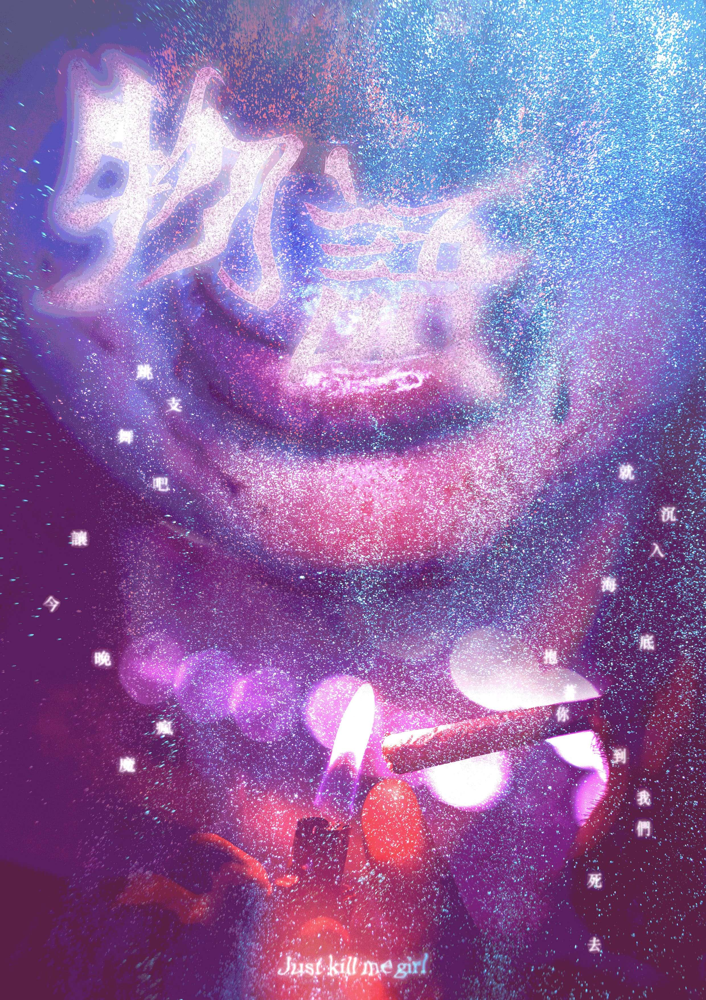
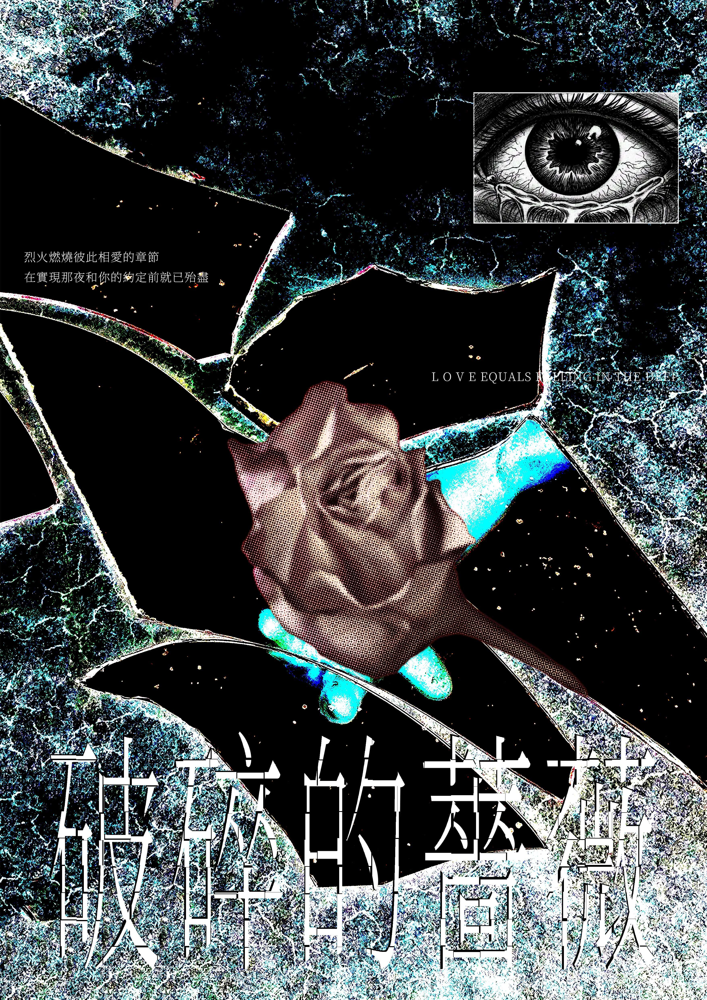
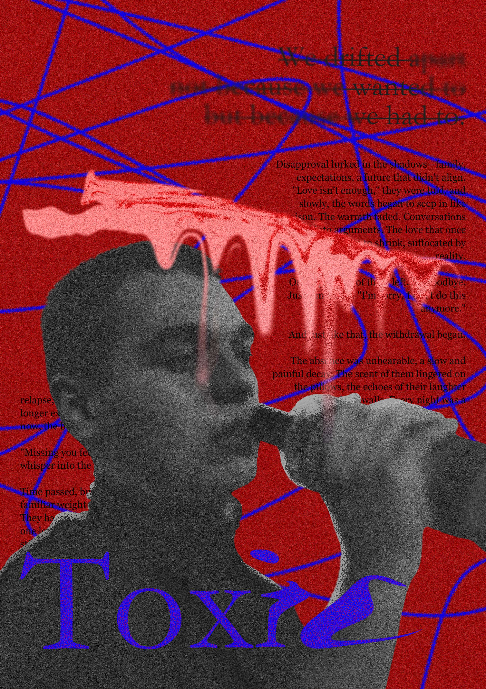

FILE / MEMORY_001
STATUS / RECOVERED
Remnants of You
A visual story about memory, disappearance and emotional traces.

Every memory remains somewhere, even after we believe it has disappeared. This project explores the fragile relationship between photography, emotion and the traces left behind by time.
Category Photography
Year 2026
Camera Canon EOS R50
Software Lightroom / Photoshop



“Some memories remain because we never truly escaped them.”
Press ESC to continue archive